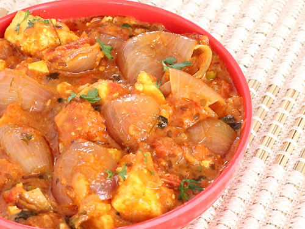
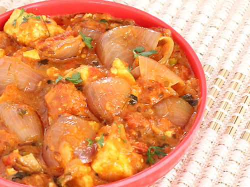

This is paneer dish.And very testy so i like paneer do payaza.
Paneer do payaza:)
Ingredients:-
- 200 grams pnaeer or indian cottage cheese
- 3/4 cup onions finely chopped
- 1/3 tomatoes chopped (1 large . or replace with curd)
- 1/3 cupcapsicum cubed
- 7 to 8 cashews
- 2 to 3 tbsps oil
- 1/2 tsp cumin or jeera
- 2 green cardamoms
- 1 1/4 tsp ginger garlic paste
- 1 tsp red chilli powder
- 3/4 tsp garam mashala
- 3/4 coriander powder
- 1/2 tsp salt (use as needed)
- 3/4 cup water
- 1/2 dried fenugreek leaves
- 1 1/2 tbsp oil or ghee
- 12 shallots - small onions or 1/4 heaped cup cubed
- 2 green chillies deseeded and sliced
Preparation for paneer do payaza:-
- make a fine puree of capsicum,tomatoes and cashews.Set the aside
- Add oilto a pan and heat it
- Add jeera and cardamoms
- when they splutter, add chopped onions
- fry until they turn golden
- Add ginger garlic paste and fry until theraw small of ginger garlic go away
- pour the tomato puree and sauteon a low to medium flame
- within minutes the mixture begins to leave the pan
- Add salt , turmeric,red chilli powder,garam masala and corinander powder
- saute till oil separates .After frying the mixture for few minutes,oil begins to oozeout
- pour water and mix well
- cook covered until the gravy thickens.Traces of oil would be seen on the gravy
- lower the flame completely.add paneer and sprinkle crushed kasuri methi 😀
- cook covered just for 2 to 3 mins.turn off the stove. do not over cook the paneer 😀
- meanwhile add 1 to 1.5 tbsp oil or ghee to a hot pan. fry onions and green chillies on high flame
just for 2 to3 mins.the onions must be partially cooked but must retain the crunch 😀
- pour this over the paneer gravy and sprinkle some coriander leaves.you can set aside few onions for garnish 😀
- paneer do payaza is ready to serve 😀
Dish looking great.The dish smells great.And test is owsam
 

5 best recipes for paneer do payaza dish from around the web:)